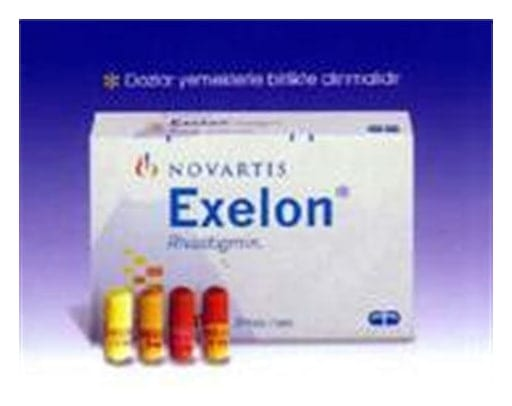

Exelon 2 mg/ml Oral Solüsyon, 120 ml

Ne için kullanılır
KT · Bölüm 1EXELON oral çözeltiyi, çocuk emniyet kapaklı, şişenin içine daldırılmış halde bir boru ve şişenin ağzına yerleşik tıpalı amber bir cam şişe içerisinde 120 mililitrelik berrak sarı renkli bir çözelti olarak takdim edilmektedir. Plastik tüp muhafaza içinde oral dozlama şırıngası ile birlikte paketlidir. Her 1 ml çözelti, 3,2 mg rivastigmin hidrojen tartarata eşdeğer bazda 2 mg rivastigmin içerir. EXELON, kolinesteraz inhibitörleri olarak isimlendirilmiş maddeler sınıfına dahildir. Alzheimer veya Parkinson hastalığı olan hastalarda hafıza bozukluğunun tedavisinde kullanılır.